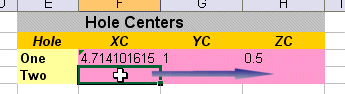
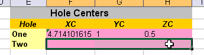
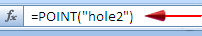
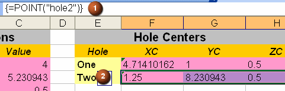

在 Xess 中，您只要在第一个单元格中输入公式，系统就会计算三个连续单元格中的三个值。
在 Excel 中，点坐标为三个值的数组，将会被作为数组公式输入。
要在 Excel 中创建数组公式：
首先选择想让值起始的单元格，然后向右拖动以选择三个单元格


在电子表格顶部的公式栏中，键入等号以及 POINT
这是一个 Excel 函数，将会返回由点的 X、Y、Z 坐标构成的数组
添加您为想要引用的孔指派的孔曲线名称属性，在 POINT 函数后加上引号以及括号
|
注释 |
名称属性不区分大小写。 |
点击公式栏中文本区域的右侧

按下 Ctrl+Shift+Enter
使用 Ctrl+Shift+Enter 是 Excel 创建数组的方法，数组与三个单独的值截然不同。
当前单元格(1)中的公式(也是其它两个单元格的公式)现在被花括号扩起来，表示它一个数组成员。
在这个练习中，数组单元显示在三个连续的单元格中(2)。

|
注释 |
如果您尝试删除某个数组成员单元格中的值，那么您会收到一条错误信息，告诉您不能更改数组的某一部分。 |